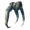
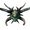

青焰龙王
本地离线版支持中英文站内搜索。带 ↗ 的链接需联网；中文采用用户词表，各页来源版本见页脚。

- 裂隙（生命值 35–85% 时 30 秒；生命值 <35% 时 20 秒）
- 撕咬（3秒）
- 爪击（每种变体 3 秒，共 2 种）
- 旋转（20秒）
- 火焰吐息（生命值 5–85% 时 25 秒）
- 陨石（生命值 25–100% 时 25 秒；生命值 <25% 时 18 秒）
- 咆哮（生命值 35–55% 时 45 秒；生命值 <35% 时 26 秒）
- 火墙（60秒，生命值15–90%）

青焰龙王是第七位首领，外形为焦黑的骸骨巨龙，身体孔洞和缝隙透出绿色光芒。
召唤地点
翡翠之焰的召唤祭坛位于灰烬之地类似竞技场的建筑中。导向符文石可在灰烬亡灵堡垒的中央塔楼找到，极少也会出现在焦骨废墟顶部，用于在地图上标记最近的召唤祭坛。在竞技场周围放置三口古钟即可召唤青焰龙王。每口钟需要三块古钟碎片制作，钟碎片可在灰烬之地各处的焦黑堡垒中找到。
袭击与能力
裂缝
青焰龙王用左爪在地上划线，抬爪后猛击地面。玩家周围会依次出现12–16个半径11米的小型绿焰圆圈，每个间隔0.45秒，总召唤时间5.4–7.2秒。每个圆圈出现4秒后会冒出巨型尖刺，随后留下伤害极高的火池，施加燃烧中状态，造成120点火焰、80点灵魂、40点0级砍伐及40点0级镐击伤害。即使玩家拥有全套焰金属护甲并激活抗火大麦酒，也可能在几秒内死亡。生命值为35–85%时每30秒可用一次，低于35%时每20秒可用一次。火焰持续15秒，无法闪避或格挡。玩家在40米以内时可使用。
咬伤
青焰龙王先缩头，再向前扑咬，攻击前方10米、40度的水平弧形范围，造成210点穿刺、300点3级砍伐及300点3级镐击伤害。玩家在9米以内时，每3秒可用一次。
爪击
青焰龙王抬起一只前爪横扫，攻击前方10米、65度的水平弧形范围，造成200点穿刺、300点3级砍伐及300点3级镐击伤害。左爪和右爪各有一种攻击，各自冷却3秒。玩家在9米以内时可使用。
旋转
青焰龙王略向右倾后旋转，攻击自身周围半径8.5米的圆形区域，造成140点穿刺、300点3级砍伐及300点3级镐击伤害。玩家在8米以内时，每20秒可用一次。
火焰气息
青焰龙王蓄力后释放一条17米长的火线，在地面留下半径4米的火焰，施加燃烧中状态，造成60点火焰、40点0级砍伐及40点0级镐击伤害。火焰持续14秒。此攻击无法格挡，仅在生命值为5–85%、玩家距离2–20米时使用，冷却25秒。
陨石
青焰龙王用后腿站起，再跺向地面，召来10颗陨石，类似亚格鲁斯的的陨石攻击，造成40点钝击、120点火焰、100点0级砍伐及100点0级镐击伤害。陨石从青焰龙王后方60米、离地90米、半径15米的球形区域落下，初速度为每秒30米，最多飞行8秒后消失。撞击后留下半径5米的绿焰圆圈，施加燃烧中状态，造成80点火焰、80点灵魂、30点0级砍伐及30点0级镐击伤害[说明1 ]。火焰持续20秒。生命值为25–100%时每25秒可用一次，低于25%时每18秒可用一次。玩家在30米以内时可使用。
咆哮
玩家在100米以内时，青焰龙王可从口中向正上方射出八颗发光球体。球体初速度为每秒20–50米，最多飞行20秒后消失，散射角为20–60度。每颗球体撞击后召唤一只已召唤灰烬战士或已调用灰烬射手，各有50%概率。两种生物各最多召唤七只；其内部标识符与普通个体不同，因此自然生成的焦黑战士和焦黑射手不计入上限。达到上限后仍会尝试使用。召唤生物拥有50点生命，伤害为普通个体的一半，也会受到青焰龙王攻击的友军伤害。生命值为35–55%时每45秒可用一次，低于35%时每26秒可用一次。
火墙
生命值为15–90%时，青焰龙王可用右爪在地面划线，在玩家周围召出火墙，施加燃烧中状态，造成80点火焰、80点灵魂、30点0级砍伐及30点0级镐击伤害。火墙由12个半径4米的火圈组成，出现在距玩家8米处，从离青焰龙王最远的位置开始顺时针生成，每个间隔0.25秒。位置以玩家当前所在地为准，因此持续移动可为自己腾出更多活动空间。玩家在40米以内时每60秒可用一次，每个火圈持续20秒。
说明
- ↑可能因拼写错误或平衡调整，此攻击实际使用的是Fader_WallOfFire_AOE预制体，而非Fader_MeteorSmash_AOE。后者会造成300点火焰、100点灵魂、300点0级伐木及300点0级采矿伤害，但青焰龙王的任何属性均未使用它。
战后情景
生物 生成
击败青焰龙王后，焦骨射手和灰烬战士会在夜间生成于青青草原、黑暗林山、泥泞沼泽、凛冽雪山及北境平原，只能为0星。
事件
击败青焰龙王会影响该世界的以下事件：
- 禁用: "亡灵军队行军"
- 禁用：“亡者已被召唤”
掉落物
| 物品 | 0星 |
|---|---|
 余烬肋骨 |
5 |
 青焰龙王战利品 |
100% |
遗弃者能力
将青焰龙王战利品挂在对应石碑上，即可获得其放逐之力，为玩家及附近盟友提供以下效果，持续300秒：
商人
击败青焰龙王后，可向沼泽女巫购买火辣香料粉，价格为200枚钱币。
图片库
-
翡翠之焰竞技场
-
翡翠之焰生成器
-
游戏中的青焰龙王


说明
- “Fader”在丹麦语及瑞典语中是“父亲”的正式用词。
- 这与冰霜龙母类似，其名称在瑞典语中意为“母亲”。
- 游戏中经常称青焰龙王为“翡翠之焰”。有趣的是，地图上用这一称号标记它的位置，而其他首领均使用各自名称。
- 背景设定中，被幼龙火焰杀死者“困于生死之间”，“血肉化为火焰，每一刻都承受痛苦”。这解释了灰烬亡灵的存在。
成就
 青焰龙王 • “隐藏成就：击败翡翠之焰。”
青焰龙王 • “隐藏成就：击败翡翠之焰。”- Fissure: 120 Fire, 80 Spirit, 40 Chop, 40 Pickaxe
- Bite: 210 Pierce, 300 Chop, 300 Pickaxe
- Claw: 200 Pierce, 300 Chop, 300 Pickaxe
- Spin: 140 Pierce, 300 Chop, 300 Pickaxe
- Flamebreath: 60 Fire, 40 Chop, 40 Pickaxe
- Meteors: 40 Blunt, 120 Fire, 100 Chop, 100 Pickaxe + 80 Fire, 80 Spirit, 30 Chop, 30 Pickaxe
- Wall of fire: 80 Fire, 80 Spirit, 30 Chop, 30 Pickaxe
- Fissure (30 seconds 35–85% HP, 20 seconds <35% HP)
- Bite (3 seconds)
- Claw (3 seconds each for 2 variants)
- Spin (20 seconds)
- Flamebreath (25 seconds 5–85% HP)
- Meteors (25 seconds 25–100% HP, 18 seconds <25% HP)
- Roar (45 seconds 35–55% HP, 26 seconds <35% HP)
- Wall of fire (60 seconds, 15–90% HP)
Fader is the seventh boss. He appears as a charred, skeletal dragon which emanates a green glow from orifices and gaps in his body.
Summoning
The Emerald Flame's summoning altar can be found in a coliseum-like structure in the Ashlands. The Vegvisir can be found in the central tower of Charred Fortresses and very rarely on top of Charred Ruins, revealing the nearest summoning altar on the map. Fader can be summoned by placing three Bells around the coliseum. It takes three Bell Fragments to craft one bell. Bell fragments can be found in charred fortresses around the Ashlands.
Attacks and abilities
Fissure
Fader draws a line on the ground with his left paw, raises it and slams it into the ground. This causes 12–16 11-meter radius circles of small green flames to emerge from the ground around players, with a delay of 0.45 seconds between each circle for a total summoning time of 5.4–7.2 seconds. After a 4-second delay (individually for each circle), large spikes shoot up where the small flames are, followed by a highly damaging flame pool that inflicts the Burning status (120 Fire, 80 Spirit, 40 Tier 0 Chop and 40 Tier 0 Pickaxe damage). This move can kill a player even with full Flametal Armor and a Fire Resistance Barley Wine active in mere seconds. Between 35–85% health, this attack can be used every 30 seconds. Under 35% health, it can be used every 20 seconds. The flames last for 15 seconds and cannot be dodged nor blocked. Fader can use this attack when he's within 40 meters of a player.
Bite
Fader pulls his head back and then lunges forward to bite in a 10-meter 40-degree horizontal arc in front of him (210 Pierce, 300 Tier 3 Chop and 300 Tier 3 Pickaxe damage). This attack can be used every 3 seconds when within 9 meters of a player.
Claw
Fader brings up one of his paws and swipes in an area in a 10-meter 65-degree horizontal arc in front of him (200 Pierce, 300 Tier 3 Chop and 300 Tier 3 Pickaxe damage). This attack has two variants, each with its own 3-second cooldown: a slash with his left claw and a slash with his right claw. He can use this attack when within 9 meters of a player.
Spin
Fader leans slightly on his right side before spinning to attack the surrounding area in a 8.5-meter radius circle around himself (140 Pierce, 300 Tier 3 Chop and 300 Tier 3 Pickaxe damage). He can use this ability every 20 seconds when a player is within 8 meters.
Flamebreath
Fader charges up and releases a 17-meter line of fire. It leaves lingering fire on the ground with a radius of 4 meters that inflicts the Burning status (60 Fire, 40 Tier 0 Chop and 40 Tier 0 Pickaxe damage). The flames last for 14 seconds. This attack cannot be blocked and can only be used every 25 seconds between 5–85% health when within 2–20 meters of a player.
Meteors
Fader rises on his hind legs and then stomps onto the ground calling forth 10 meteors, similar to Yagluth's meteor attack (40 Blunt, 120 Fire, 100 Tier 0 Chop and 100 Tier 0 Pickaxe damage). The meteors fall from the sky 60 meters behind Fader and 90 meters off of the ground in a 15-meter radius sphere. They fall at an initial velocity of 30 meters per second and can travel for up to 8 seconds before despawning. Upon impact, they leave green flames in a 5-meter radius circle that inflicts the Burning status (80 Fire, 80 Spirit, 30 Tier 0 Chop and 30 Tier 0 Pickaxe damage[Note 1]). These flames linger for 20 seconds. This attack can be used every 25 seconds while Fader is between 25–100% health. Under 25% health, it can be used every 18 seconds. He can use this ability while a player is within 30 meters.
Roar
When a player is within 100 meters, Fader can shoot eight glowing orbs out of his mouth into that air directly above him. These travel at an initial velocity of 20–50 meters per second for up to 20 seconds before despawning. They have a spread of 20–60 degrees. Upon impact, these orbs summon one Summoned Charred Warrior or Summoned Charred Marksman with a 50% chance of either. A maximum of seven of each creature can be summoned this way; since they have a unique ID from their regular counterparts, naturally-spawning Charred Warriors and Charred Marksmen do not count toward these spawn caps. Fader will still attempt to use ability even after reaching the spawn caps. These summoned enemies have 50 health and do half the damage of their regular counterparts. They also take friendly fire damage from Fader's attacks. This ability can be used every 45 seconds between 35–55% health, and every 26 seconds while under 35% health.
Wall of fire
Between 15–90% health, Fader can draw a line on the ground with his right paw which summons a wall of fire around the player that inflicts the Burning status (80 Fire, 80 Spirit, 30 Tier 0 Chop and 30 Tier 0 Pickaxe damage). This wall is is made up of 12 individual 4-meter radius circles of fire that appear 8 meters from the player, starting from the furthest point from Fader and moving clockwise with a delay of 0.25 seconds between each circle. These are generated relative to the player's current position, meaning that the player can create more room for themself to maneuver by continuously moving. This attack can be used every 60 seconds when within 40 meters of a player. Each circle is active for 20 seconds.
Notes
- ↑ Due to what is presumably a typo or balancing change, this attack does not actually use the Fader_MeteorSmash_AOE prefab but instead uses the Fader_WallOfFire_AOE prefab. The MeteorSmash prefab does 300 Fire, 100 Spirit, 300 Tier 0 Chop and 300 Tier 0 Pickaxe damage but remains unused in any of Fader's properties.
Aftermath
Creature spawning
Defeating Fader unlocks Charred Marksmen and Charred Warriors to spawn at night in the Meadows, Black Forest, Swamp, Mountain and Plains. They can only have 0 stars.
Events
Defeating Fader affects the following events for that world:
- Disables: "The undead army marches"
- Disables: "The dead have been summoned"
Drops
| Item | 0 Star |
|---|---|
| Kindled Ribs | 5 |
| Fader trophy | 100% |
Forsaken power
Mounting Fader’s trophy upon his respective stone will allow you to claim his Forsaken Power. This ability will grant the player and nearby allies the following effects for 300 seconds:
- Damage modifier: Resistant vs Fire
- Adrenaline gain: +100%
- 50% reduced Stagger meter modifier
Traders
Defeating Fader unlocks Fiery Spice Powder from The Bog Witch for 200 Coins.
Gallery
-
Emerald Flame arena
-
Emerald Flame spawner
-
Fader In-game
Notes
- "Fader" is a formal word in Danish and Swedish for "father."
- This is analogous to Moder, whose name is Swedish for "mother."
- Fader is frequently referred to as "the Emerald Flame" in-game. Interestingly, this title marks his location on the map. This is contrast to all other Bosses, whose name is their place on the map.
- Lore-wise, those who die to Drake fire are "caught between life and death" and "have flames for flesh and agony in every moment." This explains the existence of Charred.
Achievements
Fader • "Hidden achievement: Defeat the Emerald Flame."| Passive | |||||||
|---|---|---|---|---|---|---|---|
| Meadows | |||||||
| Black Forest | Bear • Deer • Ghost • Greydwarf • Greydwarf Brute • Greydwarf Shaman • Rancid Remains • Skeleton • Troll • Brenna • The Elder | ||||||
| Ocean | |||||||
| Swamp | |||||||
| Mountain | |||||||
| Plains | Deathsquito • Fuling • Fuling Berserker • Fuling Shaman • Growth • Lox • Vile • Zil & Thungr • Yagluth | ||||||
| Mistlands | |||||||
| Ashlands | Ashlands Dvergr • Charred Warrior • Charred Marksman • Charred Warlock • Charred Twitcher • Fallen Valkyrie • Bonemaw • Volture • Morgen • Lava Blob • Asksvin • Skugg • Lord Reto • Fader | ||||||
| Deep North | |||||||
| Bosses |
| ||||||
| Spawners | |||||||
| Minions | |||||||
| Fish | Perch • Pike • Tuna • Coral Cod • Pufferfish • Trollfish • Giant Herring • Tetra • Grouper • Anglerfish • Magmafish • Northern Salmon | ||||||
| NPCs |
| ||||||